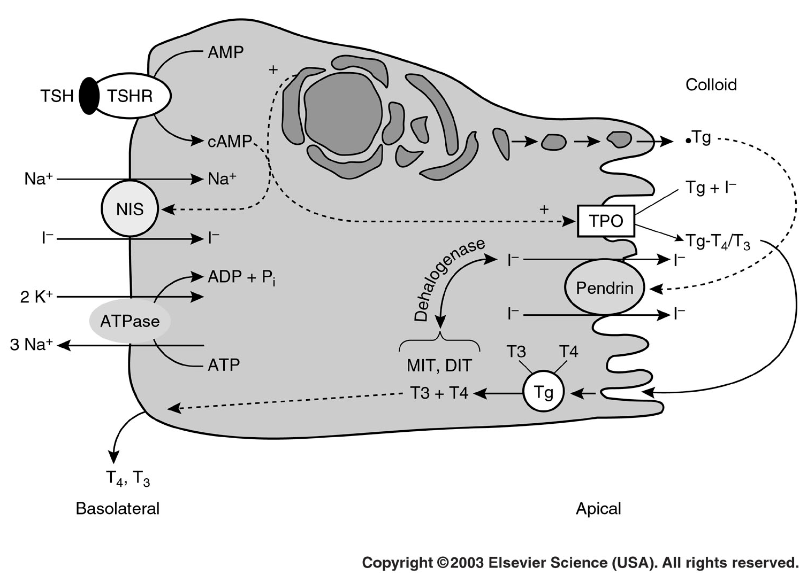
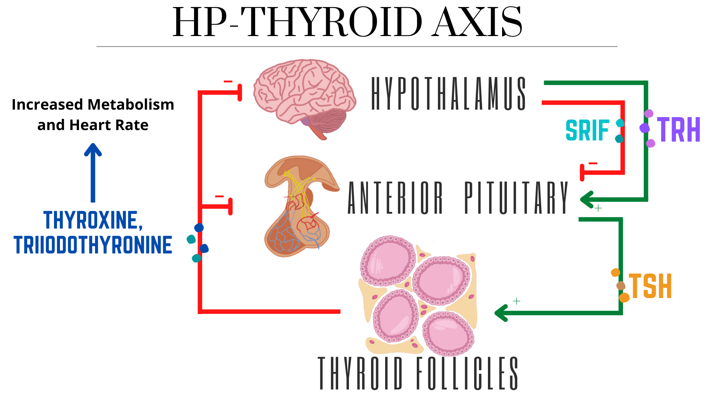
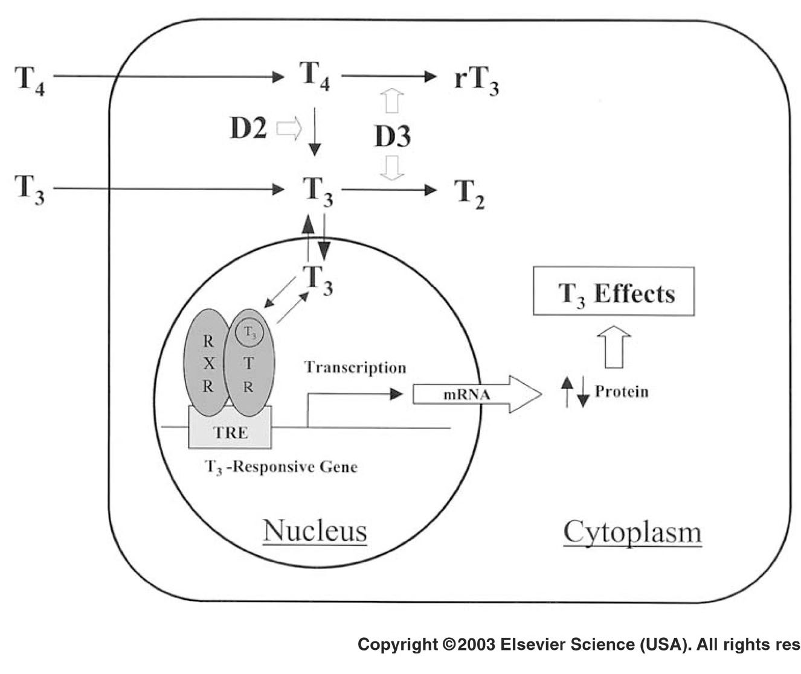
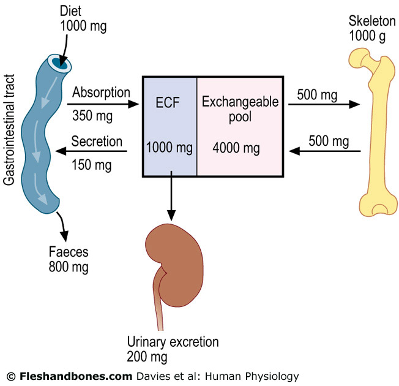
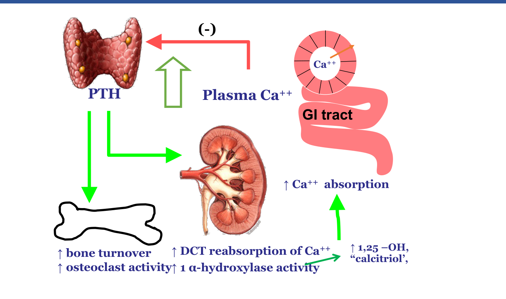

Thyroid & Parathyroid Physiology
- Thyroid hormone synthesis needs the "iodine trap" (NIS then pendrin) + TPO to iodinate/couple tyrosines on thyroglobulin — and TSH upregulates all three steps.
- T4 is made in far greater quantity and lasts longer, but T3 is 10× more potent and is the form that actually acts — most of it comes from peripheral D2 conversion of T4, not direct thyroid secretion.
- Hashimoto's (anti-TPO, blocking) → hypothyroid. Graves' (anti-TSH-receptor, activating) → hyperthyroid. Opposite antibody effect, opposite disease.
- 99% of body calcium is in bone; day-to-day, net calcium movement is zero — intestine, kidney, and bone all exchange it, but ingestion balances output.
- 1° hyperparathyroidism = high Ca — "stones, bones, groans, psychiatric overtones." 2° hyperparathyroidism = low/normal Ca (usually CKD) — the exact opposite calcium picture.
Learning Objectives
- Describe thyroid hormone synthesis, its regulation via the HPT axis, and its physiological actions.
- Distinguish hypothyroidism and hyperthyroidism, including their major causes.
- Explain calcium homeostasis and the roles of PTH and vitamin D.
- Distinguish the major disorders of calcium/parathyroid regulation.
Thyroid Gland & Hormone Synthesis
The thyroid is the largest endocrine gland, sitting in the neck, controlling how fast the body uses energy. It stores iodine and produces T3, T4, and calcitonin. Cross-sections show numerous follicular cells surrounding a lumen of colloid — a reservoir holding thyroglobulin (Tg), a large (660 kDa) glycosylated protein with ~330 tyrosine residues that serve as the raw material for T3/T4.
Iodine is essential for T3/T4 production (RDA ~150 µg/day — from iodized salt, seafood, and dark green vegetables like kelp) and is captured by a two-step "iodine trap":
- NIS (sodium-iodide symporter) uses the Na+ gradient to pump I− into the follicular cell.
- Pendrin transports that I− across the apical membrane into the colloid.
Once in the colloid, TPO (thyroid peroxidase) iodinates tyrosine residues on Tg and couples them together to form T3/T4, still attached to Tg. Iodinated Tg is stored in colloid until needed, then retrieved by pinocytosis and proteolyzed in lysosomes to release free T3 and T4 into circulation.

TSH (via the TSH receptor → cAMP) upregulates all three of these at once: NIS activity, Tg production, and TPO activity — so more TSH means more of the entire synthesis pathway running, not just one step.
The HP-Thyroid Axis
Hypothalamus → TRH → anterior pituitary → TSH → thyroid follicles → T3/T4 → increased metabolism and heart rate. T3/T4 then negative-feedback both the hypothalamus and the anterior pituitary. SRIF (somatostatin) provides an additional, separate brake directly on the anterior pituitary.

Hormone Transport, Activation & Action
T3/T4 are aromatic amino acid derivatives — not water-soluble — so they travel bound to carrier proteins. Without them, half-life would collapse. TBG (thyroxine-binding globulin) is the major carrier (~75% of circulating T3 and T4); TTR/transthyretin and HSA/albumin carry the rest.
| T3 | T4 | |
|---|---|---|
| % of hormone directly secreted | 10% | 90% |
| % free in plasma | 1% | 0.1% |
| Relative potency | 10× | 1× (baseline) |
| Half-life | 1 day | 7 days |
T4 is the reservoir; T3 is what actually acts. Peripheral deiodinases (liver, heart, and target tissues) convert T4 → T3 — that's where most active T3 actually comes from, not direct thyroid secretion.

D2 activates (T4 → T3); D3 inactivates (T4 → reverse T3, and T3 → T2) — a parallel "on/off" system, similar in spirit to how vitamin D has its own activating (1α-hydroxylase) and inactivating (24-hydroxylase) steps. T3 acts via a nuclear receptor (TR-RXR heterodimer) — a slow, genomic mechanism, fitting its role in long-term metabolic/developmental programming rather than second-to-second signaling.
Roles of Thyroid Hormone
- Growth & development: required for GH secretion/action; essential for early neural development (induces NGF). Maternal T3/T4 deficiency causes growth retardation and cretinism — a severe, largely irreversible consequence if untreated early.
- Metabolism: ↑ mitochondrial growth/activity and basal metabolic rate; ↑ heat production, O2 demand, heart rate, and stroke volume; stimulates Na+/K+-ATPase and β-adrenergic receptors (this is exactly why hyperthyroidism causes tachycardia and heat intolerance); ↑ lipolysis, glycogenolysis, gluconeogenesis; permissive for GH action, needed for prolactin/GH/surfactant/NGF expression.
Thyroid Disorders
Symptoms mirror thyroid hormone's normal actions — hypothyroidism looks like all of it running in reverse: slower heart rate, muscle cramping, cold intolerance, puffy eyes, poor concentration, low energy.
| Cause | Mechanism |
|---|---|
| Iodine deficiency → goiter | Can't make enough T3/T4 → reduced negative feedback → TSH rises unopposed → chronic stimulation causes thyroid hypertrophy (goiter). Historically endemic in low-iodine regions, including parts of North America before iodized salt. |
| Hashimoto's disease (autoimmune) | Anti-TPO antibodies block iodination → T3/T4 can't be made. A real example: an 8-year-old, 3'6" with an immature body phenotype at diagnosis was 4' tall with a normal phenotype just one year later on treatment — a striking illustration of how reversible the growth impact is. |
Hyperthyroidism drives the opposite picture, especially through the nervous system:
| Cause | Mechanism |
|---|---|
| Graves' disease (autoimmune) | Anti-TSH-receptor antibodies that activate the receptor (the opposite effect of Hashimoto's antibodies) → unregulated T3/T4 overproduction. Symptoms: hand tremor, insomnia, hyperactivity, eye protrusion (exophthalmos), mood swings, dizziness. |
Mutations in any of the other "players" — TBG, the TSH receptor, or TRβ itself — can also produce thyroid hormone pathology.
Calcium: Why It Matters & Where It Lives
- Roles: signal transduction and secretory vesicle release, membrane potential/excitability (neurons and muscle), muscle contraction and relaxation, enzyme co-factor (e.g. troponin-C, calcium-calmodulin).
- The skeleton isn't just structural: support/protection, locomotion, hematopoiesis, and calcium regulation.
- Distribution: ~99% of body calcium is in bone (as calcium phosphate, ~50% of skeletal weight); ~1% is non-skeletal (blood — protein-bound, complexed, and ionized fractions).
Three organs handle calcium balance — intestine, kidney, and bone — and in steady state, net movement is zero: ingestion balances fecal + urinary output.

Calcium Handling: Intestine, Kidney & Bone
| Organ | How it handles calcium |
|---|---|
| Intestine | Absorbed apically via the CaT1 channel, then carried through the cell by calbindin (CaBP) before exiting basolaterally. Unabsorbed calcium plus normal gut secretions are lost in feces. |
| Kidney | Processes ~10g/day; 98% is reabsorbed. The Loop of Henle reabsorbs passively; the DCT reabsorbs actively — saturable, and upregulated by PTH. |
| Bone | Trabecular bone is the metabolically active reservoir — ~15–18% of it is remodeling at any given time, so the entire scaffold renews itself roughly every 6 years. |
Bone remodeling involves three cell types: osteoblasts (bone-forming), osteoclasts (bone-resorbing), and osteocytes (sense mechanical stress, coordinate the other two). Mineralization stores calcium in bone; resorption releases it into plasma — a delicate balance that tips toward loss with aging, producing osteoporosis.
Parathyroid Hormone: Synthesis, Receptor & Regulation
The parathyroid glands sit posterior to the thyroid — average 4 glands. Chief cells sense plasma Ca++ and make PTH.
- PTH is a peptide hormone — full biological activity resides in just the first 1–34 amino acids. The gland secretes both fragments and intact PTH; the role of C-terminal fragments is still under study.
- PTHR is highly expressed in bone and kidney, and signals through two pathways at once: Gsα → cAMP → PKA, and Gq11α → PLCβ → DAG/IP3 — both ultimately raising intracellular Ca2+.
- PTHR is shared with PTHrP (a growth factor normally made in the prostate) — which is exactly why PTHrP-secreting tumors (classically lung and kidney) cause humoral hypercalcemia of malignancy (HHM): the tumor's PTHrP activates the same receptor PTH does.
- Regulation: the calcium-sensing receptor (CaSR) on chief cells detects rising plasma Ca++ and rapidly stops PTH release — a fast negative-feedback brake.
PTH's Actions to Raise Calcium
PTH raises plasma calcium both directly (kidney, bone) and indirectly (via activating vitamin D):

- Direct, kidney: increases DCT reabsorption of Ca++.
- Direct, bone: increases resorption when calcium is needed.
- Indirect, via vitamin D: increases renal 1α-hydroxylase activity → more calcitriol made → calcitriol increases intestinal Ca++ absorption. Vitamin D itself is also upregulated directly by a high-calcium state — PTH and vitamin D work as a coordinated pair, not two independent systems.
Disorders of Calcium & PTH
| 1° Hyperparathyroidism | 2° Hyperparathyroidism | |
|---|---|---|
| Calcium | High — the hallmark | Low-normal (not hypercalcemic) |
| Cause | 80% a solitary benign adenoma (1 gland) | CKD/renal failure, PTH or vitamin D resistance, vitamin D deficiency |
| Findings | Hypertension, pancreatitis, kidney stones, stomach ulcers, osteopenia, osteitis fibrosa cystica, depression/psychosis | High-turnover bone disease |
1° hyperparathyroidism's findings are the classic "stones, bones, groans, and psychiatric overtones" — kidney stones; osteopenia/osteitis fibrosa cystica; pancreatitis/ulcers (the "groans"); and depression/psychosis.
- PTHR mutations: Jansen's metaphyseal chondrodysplasia (activating → short-limbed dwarfism); Blomstrand's chondrodysplasia (inactivating → early death, defective bone maturation).
- CaSR mutations (inactivating) shift the calcium–PTH set-point rightward → hypercalcemia despite normal/high PTH → familial hypocalciuric hypercalcemia (FHH), distinguished from 1° hyperparathyroidism by low urinary calcium.
- Other hypercalcemia causes: HHM (PTHrP, above), vitamin D toxicity, sarcoidosis (granulomatous tissue activates vitamin D independent of renal control), milk-alkali syndrome (metabolic alkalosis, back pain, excessive urination).
- Hypoparathyroidism → hypocalcemia: impaired memory, personality changes, numbness (especially oral), carpopedal spasm, and (severe) convulsions/tetany. Usually iatrogenic (post-thyroidectomy) or, rarely, autoimmune.
Adapted (not reproduced verbatim) from "Thyroid Physiology" (Parts 1–2) and "Parathyroid Physiology and Calcium Metabolism" (Parts 1–2) lecture slides, plus lecture notes.